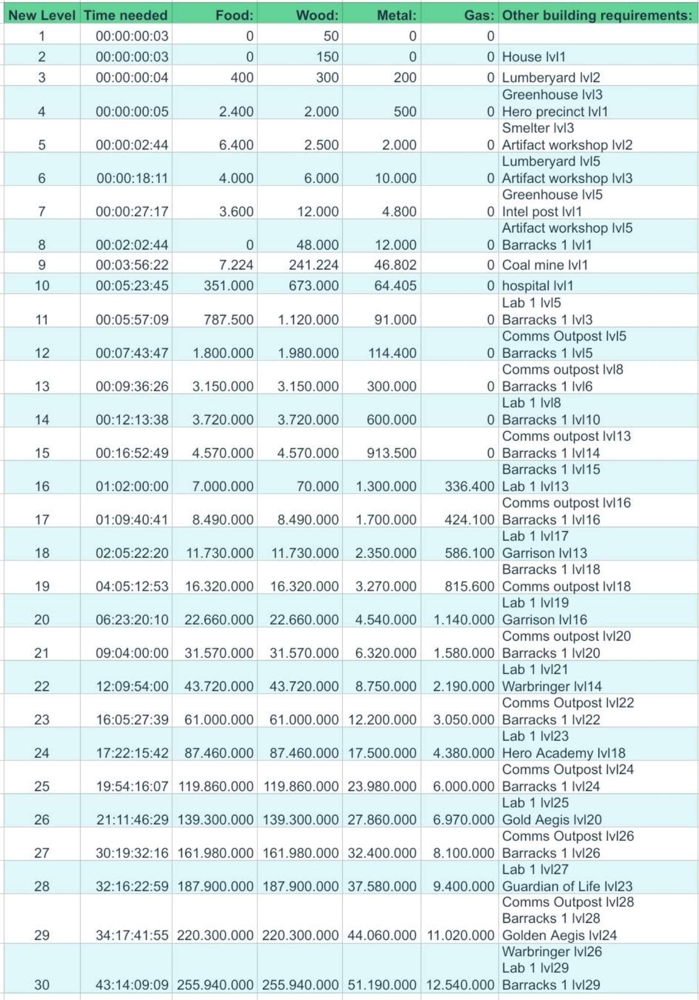

🏗 Building Requirements
Upgrade planning.
Without blind guessing.
The building upgrade reference image is here so members can check time, cost, and prerequisite structure requirements before committing.

Reference image covering new levels, time needed, resource costs, and other building requirements.
How to use this page
- Check the target level first.
- Look across for time and total resource cost.
- Check the right-most column for prerequisite buildings.
- Queue the supporting building first so you do not block your own progress later.
- Use this when planning power plant push days or construction VS days.